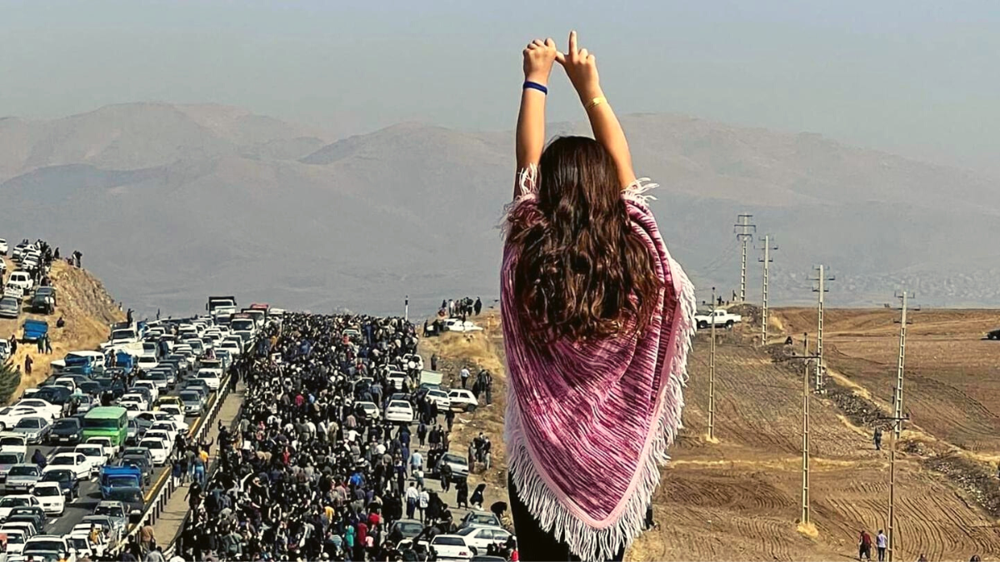

Empowering Voices: Navigating Human Rights in Iran
Here are some of the websites that provide accurate news about the human rights situation in Iran 👇
+1500 images belong to a user account on social media platforms Twitter, Instagram, and Telegram. The number 1500+ refers to the casualties of the November 2019 protests. This account initially started its activity to follow and share images of the casualties of the November 2019 protests but later evolved into a media outlet disseminating news about Iran's protests, especially the 1401 uprising. Many of the images and news from this account have been used by international and non-Persian media outlets such as BBC, CNN, The Guardian, Deutsche Welle, Radio Farda , and Voice of America.
Learn moreHengaw Organization for Human Rights was founded in October 2016 by a group of human rights activists to report about the extensive human rights violations that were occurring in the Kurdish areas in west of Iran. Hengaw relies on a network of anonymous human rights volunteers and Kurdish citizens in the west of the country to report about the human rights violations. Hengaw has no affiliation with any political party. Their reporting on the treatment of Kolbars has been used by the United Nations. Since 2022, their reporting on the crackdown of protesters in Iranian Kurdistan during the Mahsa Amini protests in 2022 has been used by various international media outlets.
Learn moreIran Human Rights (IHRNGO) is a non-profit, human rights organization with members inside and outside Iran. It is a non-partisan and politically independent organization with its base in Oslo, Norway.IHRNGO has active and supporting members in Iran, USA, Canada, Japan and several European countries. The organization started as a network of Iranian and non-Iranian human rights defenders in 2005. It was registered in Norway as an international in 2009. This site is the official news site of IHRNGO which was initiated in 2007. IHRNGO is the main body of the organization while there are two local supporting sections in Italy and NorwayReporting about the death penalty in Iran has been the main focus of the website. IHRNGO’s aim has been to create an abolitionist movement in Iran by increasing awareness about the death penalty. In recent years the number of executions in Iran has been rising and there are now a growing number of human rights defenders, groups and even political organizations giving attention to the death penalty.
Learn more